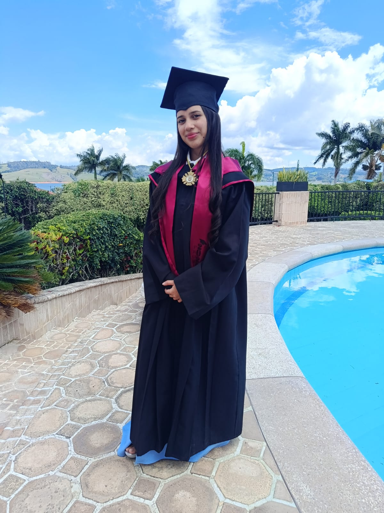

Nawal Valeria
Noguera Davila
Estudiante · Innovadora en formación
Soy una estudiante responsable y comprometida, con una mentalidad enfocada en resolver problemas sobre la tecnologia. Me gusta aprender cosas nuevas, tambien me comprometo con cada proyecto buscando aprender algo nuevo constantemente y cumplir con las responsabilidades para aplicar lo aprendido y superar mis propias metas. "Mi objetivo es crecer tanto a nivel personal como profesional a lo largo de este camino".

Aspiraciones educativas
Al terminar el colegio, me gustaria continuar mi formacion academica en una institucion de educacion superior o universidad especializados para estudiar la carrera de Gastronomia y Ciencias Culinarias.Me interesa mucho esta profesion porque combina la creatividad.la cultura y la ciencia detras de la preparacion de los alimentos,permitiendo conectar con las personas a traves de la innovacion culinaria. Durante mis estudios,aspiro a desarrollar habilidades tècnicas avanzadas en cocina internacional,pasteleria y gestion de negocios gastronomicos,ademas fortalecer capacidades claves como el liderazgo en la cocina,el trabajo bajo presion y el pensamiento critico. Mi mente esta enfocado en lo pràctico y de alta calidad,que me brinda las herramientas necesarias para destacar en la industria culinaria.
Intereses tecnológicos
Me interesa aprender sobre la inteligencia artificial, diseño web e diseño grafico,para poder explorar de manera responsable y creativa parea usar la tecnología.
Áreas de estudio
Me atraen profundamente la gastronomía y las ciencias culinarias, ya que considero que son áreas fundamentales que combinan a la perfección el conocimiento técnico, la creatividad y el trabajo colaborativo. Mi interés se centra en explorar la riqueza cultural de los alimentos, las técnicas de preparación y la innovación dentro de la cocina. A través de este campo de estudio, aspiro a potenciar tanto mis habilidades prácticas con los ingredientes como mi capacidad para trabajar en equipos dinámicos dentro de un entorno profesional. Mi objetivo es dominar este arte para crear experiencias gastronómicas únicas que respondan con creatividad y excelencia a las exigencias del sector actual.
Otros intereses
Disfruto pintar, escuchar música, tomar fotografías y compartir tiempo con mi familia. También me gusta hacer deporte y participar en actividades colaborativas.